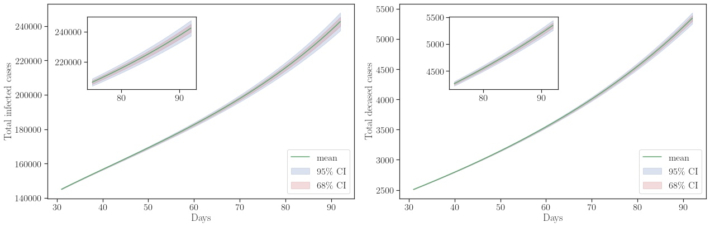
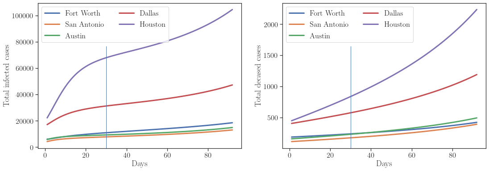
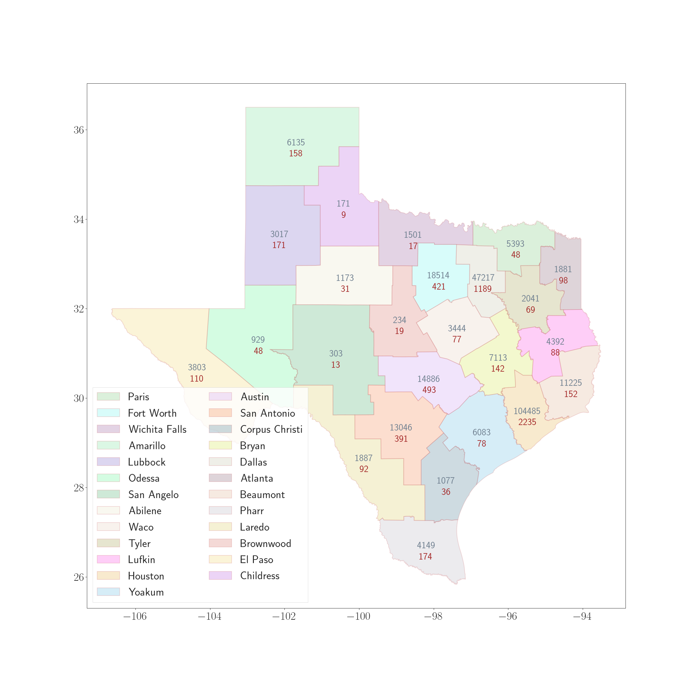

Prediction of COVID-19 cases in districts of Texas state
Prediction of COVID-19 cases in districts of Texas state
Introduction
We model the spread of COVID-19 infection in Texas using PDE based SEIRD model. The model describes spatially changing susceptible, exposed, infectious, recovered, and a deceased fraction of the population. The model is discretized using finite element approximation and an implicit Euler scheme. At each time step, we perform fixed-point iteration to solve the coupled equations; see paper for more details. The solver is implemented using FEniCS.
To infer for the model parameters and to check the validity of the model, we employ the Bayesian inference in OPAL (Occam Plausibility Algorithm), see Oden et al. 2017 and Oden 2018. The model parameters are inferred using the total number of infected and deceased cases in Texas. The results show that the model is invalid for predicting the infected patients and is Not Invalid to predict the deceased cases.
For Bayesian inference, hIPPYlib library is used. The preconditioned Crank-Nicolson (pCN) algorithm in hIPPYlib is utilized for generating posterior samples.
-
See our paper on COVID-19 modeling and model inference appeared in Computational Mechanics journal: paper link and pdf link
-
Codes are publicly available in GitHub
-
This work is in collaboration with Lianghao Cao and Dr. J. Tinsley Oden at the University of Texas at Austin
Results
Validation results
The model was found to be invalid for predicting the total infected cases; however, it is found to be adequate for the prediction of the total deceased cases.
Prediction results
- By September 1, 2020, we predict to see about 7003 fatalities and 301658 infected cases. Uncertainties, in terms of the standard deviation of the QoI distribution, in deceased and infected cases are about 102 and 5786.
These calculations are based on the COVID-19 data up to June 30, 2020. It is now clear that the model has underestimated the deceased cases even though it was valid. This motivates us to look further into the model. It is also possible that the upward trend of deceased cases was not strong in the data.
- Prediction results for total infected and deceased cases in Texas starting from 1 July till 1 September 2020

- Projection of cases in the top five districts. The prediction period is July 1, 2020 – September 1, 2020

- Projection of total cases in 25 districts on August 15 (left) and September 1 (right). Red corresponds to the deceased cases, and grey corresponds to the infected cases
| August 15, 2020 | September 1, 2020 |
|---|---|
 |
Prashant K. Jha
Research Associate
My research is driven by the application of mathematical modeling and computational methods to present-day relevantand challenging problems. Specific areas include continuum and fracture mechanics, computational oncology, and mul-tiscale modeling.